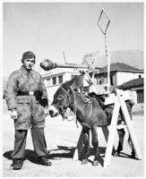
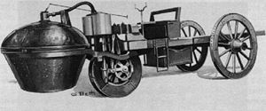
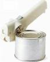
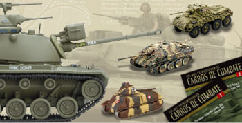
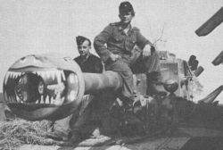

Panzer
 De: La Frikipedia, la enciclopedia extremadamente seria.
De: La Frikipedia, la enciclopedia extremadamente seria.
| De la serie vehículos de ayer y de hoy:
|
| Panzerkampfwagen
|
| 
|
| ¡Menuda burrada de arma!
|
|
| Marca
|
Panzer S.A.
|
| Modelo
|
I-VII
|
| Antigüedad
|
un poco...
|
| Velocidad
|
Como un semioruga con 20 toneladas más de peso
|
| Precio
|
90.000 Reichsmarks
|
| Mano
|
5ª o 6ª
|
| Combustible que usa
|
Gasolina, diesel
|
| Colores
|
gris o camuflaje
|
| Tipo
|
Carro de combate
|
| Plazas
|
5
|
| ¿Se puede tunear?
|
No, si no quieres provocar al führer
|
| Notas
|
Las minas son malas
|
Panzer es la abreviatura de la palabra nazi Panzerkampfwagen, que viene a ser montón de chapa con ruedas y un obús de 60 milímetros. Cualquier iletrado bastardo y mísero cómo tú, IP anónima, diría que un panzer es un tanque (¡qué rayos! ¡¿Un tanque de qué?! ¡De leche, de gasolina, de pus...!) carro de combate (no confundir con los carros de ruedas llenas de pinchos de los egipcios, esos mariquitas enemigos de Julio César y Erwin Rommel) alemán de la Segunda Guerra Mundial. Los hombres con sesera saben que un panzer es un término que designa a un montón de vehículos de la época del 35 al 45.
La palabra Panzer viene del gabacho, lengua hablada en la tierra de nadie entre España y Alemania, y quiere decir coraza grecorromana oxidada y llena de moho. El principal promotor de estos tanques fue un político llamado Adolf Hitler, hombre de cierta experiencia bélica, aunque fue usado por Erwin Rommel y Heinz Guderian, dos pilotos de carreras alemanes, sobre todo en zonas como Polonia y la U.R.S.S..
Historia
Iª Guerra
 Tanque alemán de la Iª Guerra Mundial.
Durante la Primera Guerra Mundial, el káiser Willy II, que era tonto, sólo ordenó la construcción de 100 tanques. Se llamaban Sturmpanzerwagen Allgemeines Kriegsdepartement 7 Abteilung Verkehrswesen... ¡BUFFFFF! Respiren, caballeros, un vaso de vomitivo té frío inglés, y continuemos...
Estos trastos inútiles consistían en un carro de madera recubierto por una cubierta de cartón pluma pintada de color gris y con agujeros por donde salían máusers con bayoneta. El vehículo funcionaba movido por una máquina de vapor mondelo Cugnot de 1770, aunque 2 forzudos de Sajonia podían sacar los pies por debajo del chasis para empujar con los pies, igualito que en los Picapiedra.
El poco éxito de estos tanques fue absoluto: su velocidad era de 5 km/h, y todos fueron destruidos por soldados británicos tullidos y ciegos por efecto de gases lacrimógenos (¿o eran pedos de campesino bávaro atiborrado de chucrut?). Lo único que se usó de estos ridículos tanques en los panzers, fue la típica cruz negra germana.
Entreguerras
Después de la Primera Giliflautada Mundial, los tanques inútiles de nombre raro mencionados anteriormente, fueron usados como bañeras para ganado o bien a modo de cafeteras gigantes para calentar licores durante la Oktoberfest de 1919. Entre tanto, en Postdam, Heinz Guderian, desempleado alemán por culpa del parón de operaciones militares a fines de 1918, se inventaba una cosa nueva: La Guerra relámpago... se vendió bien.
Su jefe supremo, el Hitler, algo de derechas, decidió ponerse manos a la obra en "La solución final" en la ¡Conquista de Europa! Para ello necesitaba muuuuchos trastos militares. Con ese objetivo comenzaron a montarse panzers en la empresa X (La Frikipedia no revela el nombre de la empresa para evitar manchar el nombre de Opel, Krupp, Au... ¡chist!). El modelo panzer I se usó en un pequeño conflicto periférico, nada más.
Los posteriores panzer II y panzer III no vieron tampoco mucha acción. Alguno cayó en manos rumanas y fue hallado en los 90 en un vertedero de las afueras de Odessa. El auténtico boom de los panzer llegó con el... Panzer IV, más gordo, fuerte y artillado que los otros, que a su lado eran mierdecilla. Peligrosa arma antitanque.
IIª Guerra
El panzer IV se exhibió al mundo mundial por primera vez en Polonia, en 1939, más que nada a modo de prueba. El éxito hizo que se enviara en masa a la U.R.S.S. para deponer a Iósif Stalin, hombre de conviciones políticas algo izquierdistas. En Rusia hay -50 ºC en invierno, y la gasolina se congeló. Adiós a los panzers. Los rojos ganaron así la batalla de Stalingrado y alguna otra.
Para evitar la derrota final se idearon los panzers VI, llamados Tigers, que daban miedo que te cagas. Tenían un gordo cañón capaz de mandar al carajo a 20 tanques americanos. Desgraciadamente, ya no había gasolina (salvo en el despacho del führer, para quemar su cadáver). Para mover al panzer VI y al panzer VII, más pesado aún, se usó tracción animal (asnos con artillería pesada).
Los aliados habían ganado la guerra. Algunos panzer sobrevivieron, no obstante, en ejércitos como el de cierto monarca íbero.
Elementos característicos del panzer
- Un cañón de calibre alto: unos 60 u 88 milímetros, mídase con la cinta métrica o bien busque un desgraciado tanque comunista que fue impactado por una granada de las de comer de un panzer.
- Tres ametralladoras MG42: son esas del Call of duty que son fijas y hacen un ruido que te deja sordo y cabreado.
- Una cruz gamada de color negro: por regla general, un vehículo nazi tiene que llevar algún distintivo que evite que no sea destruído por soldados buenos.
- Un motor de gasolina que no admite diesel (crucial para Siberia y esos sitios fríos).
Modelos
 Varios modelos de panzer.
 El acojonante cañón de un panzer VI.
- Panzer I: era una mariconada en comparación con el IV, pero para perseguir rojos por Brunete y esas zonas iba bien. Era la versión con coraza, oruga y cañón del automóvil de Hitler de 1933. Se fabricaron 1.713 unidades. Todas tenían coraza de un milímetro (desbastada de hojas de papel din A-4), dos ametralladoras MG34, una encima (en la torreta, bien almenada y con barbacanas), y otra debajo, para ametrallar a los enemigos que dormían en las trincheras, y a los topillos de Castilla en el caso español. No era muy difícil de destruir. Con una granada de mano, un cóctel molotov, un abrelatas o un superpedo los dejabas fuera de combate.
- Panzer II: fabricado en serie y en paralelo a partir de 1937, era un simple tractor con la coraza de un caballero medieval de 500 kg. Se diseñó mezclando tanques rojos capturados por Paco I de España con un volkswagen Escarabajo. El resultado fue penoso. El cañón sólo era apto para obuses Nkhajjaïorthök de fabricación Kazaja, y funcionaba con keroseno a base de grasa de pingüino. Entró en combate en Austria para perseguir una banda de mafiosos rumanos.
- Panzer III: este ya era mejor. La coraza no se podía traspasar a no ser que se contara con piezas de artillería Gran Berta de la Primera Guerra Mundial, con un calibre de 400 mm. En Polonia, cuya artillería oscilaba entre
calibres de... cañones napoleónicos y falconetes del siglo XVI, fue letal. Se iba a usar para invadir Inglaterra, pero una tormenta lo evitó Dios, que es anglicano, acudió en ayuda de Sir Winston Churchill.
- Panzer IV: era una pequeña arma de destrucción masiva. Era un búnker de cemento con ruedas (literalmente, claro). Hicieron polvo la línea Maginot en el 40 y entraron en Francia devastando pueblos enteros. Hacían falta 50.000 soldados de la Guerra franco-prusiana para detener a uno sólo. Disponía de un cañón de 66 mm y de una catapulta en la torreta. Se fabricaron 7.000 unidades. Su motor de gasolina obsoleta sufrió los problemas del frío en Rusia, pero ello no tuvo nada que ver con que Alemania perdiese.
- Panzer V: llamado Panther, era feo de forma, pero podía destruir una bicicleta británica a 12 metros de distáncia. Era una versión del IV con una torreta tornada en una fortificación de campaña casi como la Gran Muralla china. Usaba 10 ó 12 judíos como medio de tracción (ya no quedaba ni un gramo de gasolina en Alemania). Los americanos le dieron bien a este modelo, siempre con bazookas mu gordos... Ya se veía que los panzers estaban en decadencia.
- Panzer VI: Tiger para los amigos, era un misil nuclear con ruedas, con cañones por ambos lados y mil ametralladoras. En un principio, la bomba atómica se diseñó para destruirlos, pero la invención del bazooka de calibre 88 evitó tan fatídico hecho. En Normandía mataron a muchos personajes de Band of Brothers y de Brothers in Arms. Finalmente, Hitler metió la cabeza dentro del cañón de uno para irse al otro barrio. Esta fue la razón de que no se hallara su cadáver.
- Panzer VII: King Tiger para los amigos, versión más potente del panzer. Podía aguantar la fuerza de medio ejército americano, pero los aliados inventaron tanques más gordos aún(M26 Pershing americano)evitando recortes en el presupuesto. Tenía un cañón de 200 mm y cinco ametralladoras MG34 upgradeadas para que disparen con potencia y un lanzallamas de queroseno(para el frío de Rusia, como no se congelaba)
Modelos que no se completaron o no entraron en combate
- Panzer VIII: Maus para los amigos,nunca entro en combate pero si existieron 3 prototipos,era un verdadero monstruo de 188 toneladas,blindaje de mil putas imposible de penetrar,y mas lento que
tu hermana una tortuga drogada, el primer prototipo fue destruido por los nazis pa que los yanquis no les pelen el diseño (como todo lo que tienen),el segundo se lo compro maradona y lo cambio por droga, y el tercero fue pillado por Stalin.A este le hicieron muchas pruebas (blindaje,poder de cañon,velocidad y anal),al pobre lo agararon a pixulasos con sus cañones y ni le rasparon la pintura,le dispararon a su mejor tanque y el Maus se lo hiso bolsa, midieron que su velocidad máxima y dio como resultado exactamente 2,5 Kilogramos por hora y bueno... para que explicar la ultima...
- Landkreuzer P 1000 Ratte:Nunca se construyo(GRACIAS AL CIELO O SI NO CAGAMOS),Era un puto y verdadero monstruo,se suponía que pesaría 1000 TONELADAS (OMG),tendría 2 cañones de esos terrible gordos de barco (OMFG) su tripulación era de 10 nazis mínimo (si tenían que ser nazis o la wea no arrancaba),como 1000000001 cañones antiaéreos,el blindaje bueno... no creo que necesite explicar cuan grueso era. Y en cuanto al uso que esos pollos le iban a dar no tengo idea...
- Landkreuzer P 1500 Monster:Si se
pajearon asustaron con el P1000 no se imaginen este .como habrán deducido por el nombre (si no son unos gilipollas)debía pesar 1500 toneladas... el cañón era un Dora montado,y si no sabes que es un dora tirate en frente de un bus por aweonao es un hyper super mega colosso pene cañón de 9999999999mm anti Otaku/emo/cani/friki/n00b (cualquier weon o wea que se le ponga en frente).la velocidad máxima de ese colosso no se tiene idea (obvio si no existió) pero me imagino que debe ser mas lento que la chucha y como el anterior, el uso que se le iban a dar era...[inserte uso estúpido aquí]
Véase también
No se vea
Enlaces externos
 Transporte Transporte 
|
|
|
Autor(es):
- Fordus
- Roms
- Azulejos
- Hank
- Grimlock
- Mad Max
- Veni Vidi Vici
- Catacras
- Pinguinorastafario
- Juanjo93
Frikipedia 2005-2016, Licencia
GFDL 1.2 - Extraído por FrikiLeaks